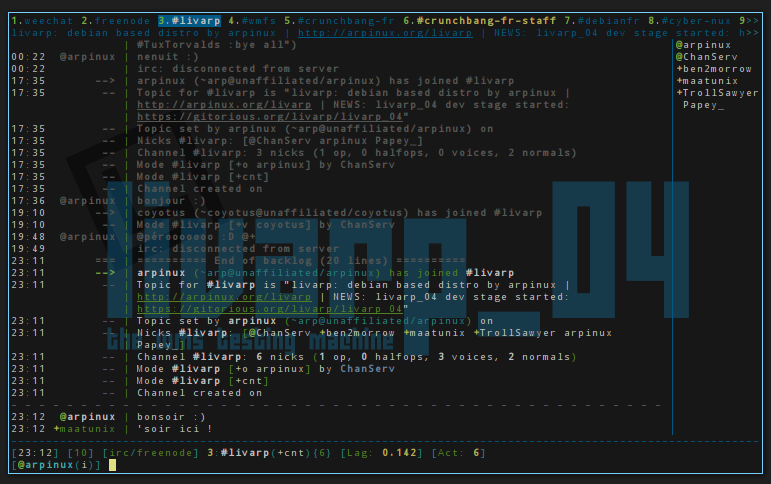

lang fr|gb

l'irc avec weechat
1. Démarrer WeeChat
Un émulateur de terminal recommandé pour X (mais pas obligatoire) est rxvt-unicode (il a un bon support UTF-8, et aucun problème avec les touches par défaut).
Lancer "weechat-curses" depuis votre shell.
2. Aide en ligne / options
WeeChat dispose d’aide pour toutes les commandes, tapez simplement /help. Pour avoir de l’aide sur une commande, tapez /help commande
Pour modifier des options, utilisez /set config.section.option valeur (où config est le nom de la configuration (weechat pour le coeur, ou un nom d’extension), section la section de cette configuration et option le nom de l’option).
WeeChat utilise immédiatement la nouvelle valeur (vous n’avez jamais besoin de redémarrer WeeChat après avoir changé la configuration).
Vous pouvez utiliser /set avec un nom partiel d’option et le caractère joker "*" au début ou à la fin pour afficher toutes les options contenant ces lettres. Par exemple :
/set
affiche toutes les options (WeeChat et extensions)
/set weechat.*
affiche les options WeeChat
/set irc.*
affiche les options de l’extension IRC
Vous pouvez afficher de l’aide sur une option avec /help, par exemple :
/help weechat.look.highlight.
Toutes les options sont sauvées quand WeeChat quitte (ou avec la commande /save pour forcer une écriture des options).
Vous pouvez éditer les fichiers de configuration (*.conf) à la main et les recharger par la commande /reload si vous ne souhaitez pas utiliser la commande /set.
3. Coeur vs extensions
Le coeur de WeeChat ("core") ne fait qu’afficher les données à l'écran et interagir avec l’utilisateur, cela signifie que le coeur sans extension n’a pas grand intérêt (utilisateurs fidèles: IRC faisait partie du coeur dans les versions ≤ 0.2.6).
Tous les protocoles réseau comme IRC sont fournis sous forme d’extensions.
Utilisez la commande /plugin pour voir les extensions chargées, vous devriez voir "irc" et d’autres extensions dans cette liste.
4. Créer un serveur IRC
Vous pouvez ajouter un serveur IRC par la commande /server, par exemple :
/server add oftc irc.oftc.net/6667
Comme d’habitude, de l’aide est disponible si vous êtes perdus : /help server
5. Définir les options du serveur IRC
WeeChat utilise des valeurs par défaut pour tous les serveurs, si vous ne spécifiez pas de valeur spécifique pour une option de serveur. Ces options par défaut sont "irc.server_default.*".
Pour chaque option d’un serveur, WeeChat utilise sa valeur si elle est définie (non "null"). Sinon WeeChat utilise la valeur par défaut ("irc.server_default.xxx").
Par exemple il y a des pseudos par défaut (basés sur votre login un*x), et vous pouvez les écraser pour le serveur oftc avec la commande suivante :
/set irc.server.oftc.nicks "pseudo1,pseudo2,pseudo3,pseudo4,pseudo5"
Pour modifier le nom d’utilisateur et nom réel :
/set irc.server.oftc.username "Mon nom d'utilisateur"
/set irc.server.oftc.realname "Mon nom réel"
Pour activer la connexion automatique au serveur lors du démarrage :
/set irc.server.oftc.autoconnect on
Pour lancer une commande après connexion au serveur, par exemple pour s’identifier auprès de nickserv :
/set irc.server.oftc.command "/msg nickserv identify xxxxxx"
Pour rejoindre automatiquement des canaux lors de la connexion au serveur :
/set irc.server.oftc.autojoin "#canal1,#canal2"
6. Se connecter au serveur IRC et rejoindre les canaux
/connect oftc
Cette commande peut aussi être utilisée pour créer et se connecter au serveur sans utiliser la commande /server
Par défaut, les tampons des serveurs sont mélangés avec le tampon core WeeChat. Pour basculer entre le tampon core et les tampons des serveurs, il faut utiliser la touche ctrl-X.
7. Joindre/quitter les canaux IRC
/join #channel: joindre un canal
/part [message de fin]: quitter un canal (en laissant le tampon ouvert)
/close [message de fin]: quitter un canal et fermer le tampon (/close est un alias sur /buffer close)
8. Gérer les tampons/fenêtres
Un tampon ("buffer") est un composant lié à une extension, avec une catégorie et un nom. Le tampon contient les données affichées à l'écran.
Une fenêtre ("window") est une vue sur un tampon. Par défaut il n’y a qu’une fenêtre affichant un tampon. Si vous divisez l'écran, vous verrez alors plusieurs fenêtres avec plusieurs tampons en même temps.
Commandes pour gérer les tampons et les fenêtres :
/buffer
/window
Par exemple, pour découper verticalement l'écran en une petite fenêtre (1/3 de la largeur) et une large (2/3), utilisez la commande :
/window splitv 33
9. Raccourcis clavier
WeeChat utilise un certain nombre de touches par défaut. Toutes ces touches sont dans la documentation, mais vous devriez connaître au moins les touches vitales :
> alt + flèches gauche/droite (ou F5/F6): aller au tampon précédent/suivant
> F7/F8: aller à la fenêtre précédente/suivante (quand l'écran est divisé)
> F9/F10: faire défiler la barre de titre
> F11/F12: faire défiler la liste des pseudos
> tab: compléter le texte de la barre d’entrée, comme avec votre shell
> page préc/suiv: faire défiler le texte dans le tampon courant
> alt + A: sauter au tampon avec de l’activité (dans la "hotlist")
Selon votre clavier et/ou vos besoins, vous pouvez associer n’importe quelle touche à une commande avec la commande /key. Une touche utile est meta-k (alt-k) pour trouver le code des touches.
Par exemple, pour associer meta-y (alt-y) à la commande /buffer close :
/key bind (pressez meta-k) (pressez meta-y) /buffer close
10. Extensions/scripts
Sur certaines distributions comme Debian, les extensions sont disponibles via un paquet séparé (par exemple weechat-plugins). Les extensions sont automatiquement chargées lorsqu’elles sont trouvées (merci de regarder la documentation WeeChat pour charger/décharger des extensions ou des scripts).
De nombreux scripts externes (de contributeurs) sont disponibles pour WeeChat : http://www.weechat.org/scripts
Vous pouvez gérer les scripts dans WeeChat avec la commande /script (voir /help script pour plus d’info).
Vous pouvez maintenant utiliser WeeChat et lire la FAQ/documentation pour toute autre question : http://www.weechat.org/doc